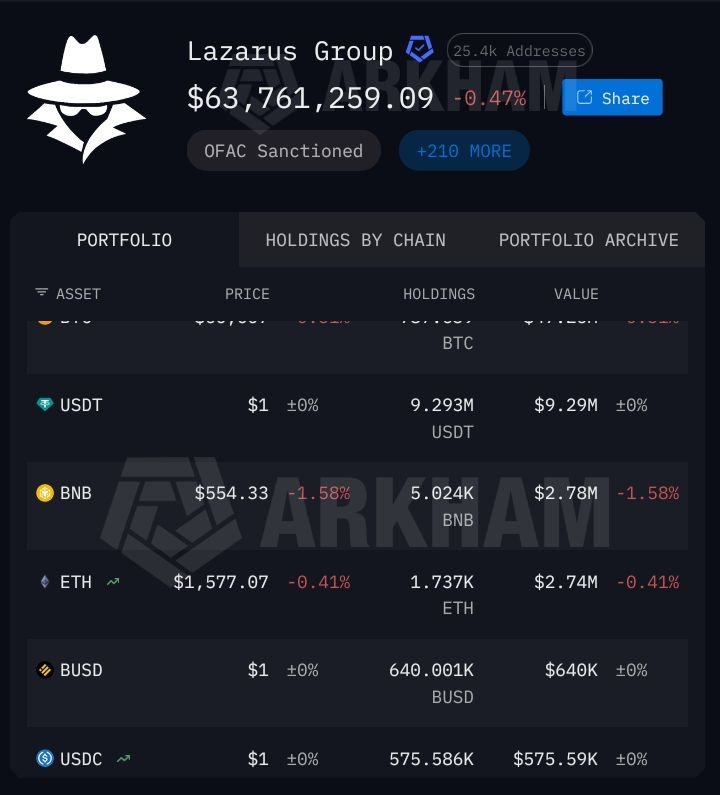
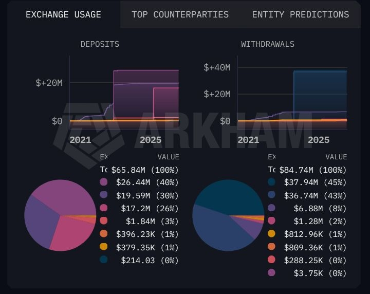
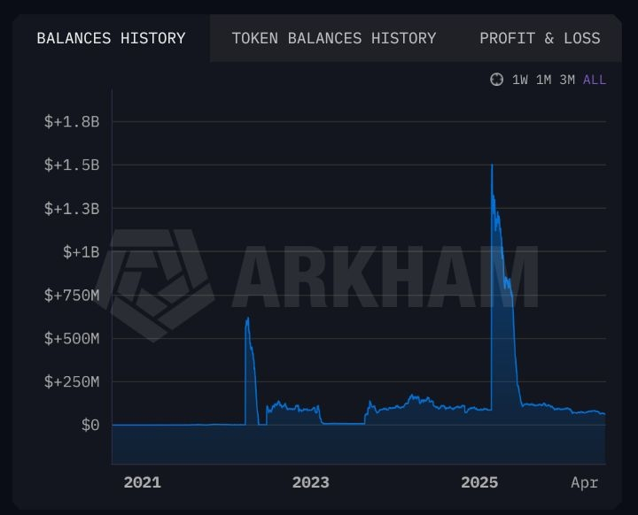
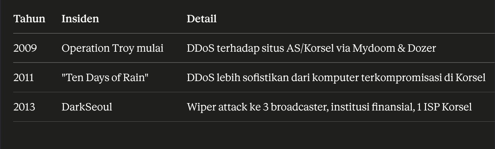
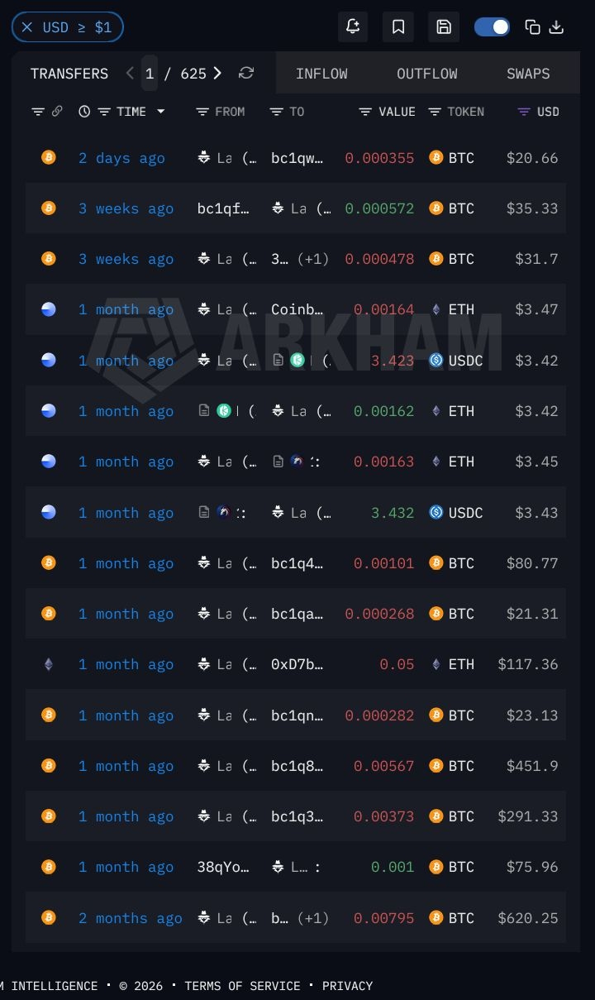
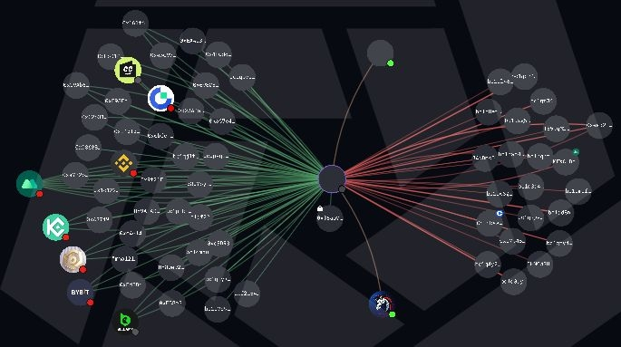
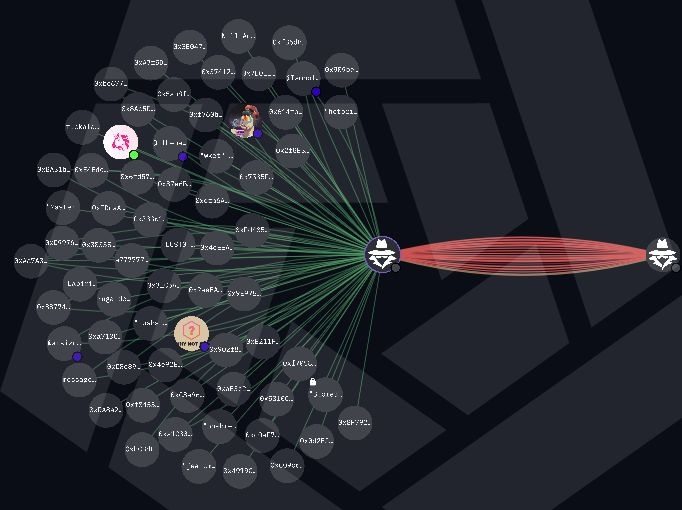
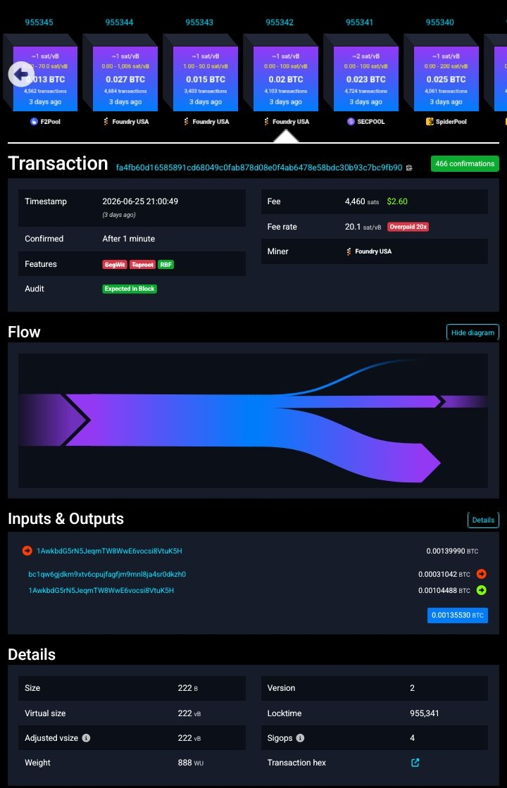

Apa sebenarnya Lazarus Group ini? Mari kita telusuri lebih lanjut.

01 — Akar Historis (Sebelum "Lazarus" Ada)
Pembentukan kapasitas cyber Korea Utara jauh lebih tua dari nama "Lazarus" itu sendiri. Direktur NK Intellectuals Solidarity, Heung Kwan Kim, menyatakan Korea Utara terinspirasi dari unit cyberwar Tiongkok dan belajar dari mereka. Menyadari kekuatannya, Korea Utara mendirikan unit pertama di pemerintahan pusat pada 1993.
Versi lain menyebut periode pembentukan sedikit berbeda: genesis Bureau 121 bisa dilacak ke akhir 1990-an ketika Korea Utara mulai menyadari potensi teknologi informasi sebagai alat pertahanan dan ofensif nasional. Rezim menyadari operasi cyber bisa jadi strategi peperangan asimetris melawan musuh yang superior secara teknologi, khususnya musuh utama mereka Korea Selatan dan Amerika Serikat.
Riset lain (Hunt & Hackett) menyebut tahun pembentukan yang lebih spesifik: tanda-tanda paling awal Lazarus bisa dilacak ke 2007, saat Korea Utara di bawah kekuasaan Kim Jong Il, ayah dari pemimpin saat ini Kim Jong Un. Lazarus diyakini didirikan sebagai unit cyberwarfare di bawah Reconnaissance General Bureau (RGB), agensi intelijen utama Korea Utara.
"Serangan cyber itu seperti bom atom" dan "perang dimenangkan atau dikalahkan oleh siapa yang punya akses lebih besar ke informasi teknis militer musuh di masa damai."
— Kim Jong Il, dikutip dari laporan mengenai motivasi investasi cyber warfare rezim
Meski tidak pasti, kemungkinan mereka juga berada di belakang serangan 2007 yang menyasar Korea Selatan.

02 — Operasi Pertama yang Terdokumentasi (Operation Troy)
Serangan pertama yang dikenal dan diatribusikan ke kelompok ini disebut "Operation Troy", berlangsung dari 2009 sampai 2012. Sebuah kampanye cyber-espionage yang memanfaatkan teknik DDoS yang tidak terlalu sofistikan untuk menyasar pemerintah Korea Selatan di Seoul.
Insiden hacking besar pertama Lazarus Group terjadi pada 4 Juli 2009, memicu awal dari "Operation Troy". Serangan ini menggunakan malware Mydoom dan Dozer untuk meluncurkan serangan DDoS skala besar namun tidak terlalu sofistikan terhadap website AS dan Korea Selatan. Rentetan serangan ini menghantam sekitar tiga lusin website dan menaruh teks "Memory of the Independence Day" di master boot record (MBR).
Evolusi taktik berlanjut, serangan Maret 2011 yang disebut "Ten Days of Rain" menyasar media, finansial, dan infrastruktur kritis Korea Selatan, terdiri dari serangan DDoS yang lebih sofistikan yang berasal dari komputer yang dikompromikan di dalam Korea Selatan. Serangan berlanjut pada 20 Maret 2013 dengan DarkSeoul, serangan wiper yang menyasar tiga perusahaan penyiaran Korea Selatan, institusi finansial, dan satu ISP.
03 — Dari Espionase ke Pendanaan Rezim
Titik balik strategis terjadi pasca-kematian pemimpin lama. Operasi paling awal Lazarus cenderung berfokus pada espionase dan disrupsi, terutama menyasar organisasi di Amerika Serikat dan Korea Selatan. Setelah kematian Kim Jong Il pada 2011, Kim Jong Un berupaya memperluas visi ayahnya dan memanfaatkan kapasitas cyber negara untuk menghasilkan pendapatan bagi rezim.
04 — Struktur Komando: RGB, Bureau 121, dan Lab 110
Ini bagian paling kompleks dan paling sering disalahpahami, termasuk oleh media. Berikut breakdown struktur sesuai sumber paling kredibel (Mandiant/Google Cloud):
RGB didirikan pada 2009, adalah agensi intelijen Korea Utara yang bertanggung jawab atas spionase, operasi rahasia, dan cyber espionage. RGB terdiri dari enam bureau berbeda, dengan Bureau ke-3 (Foreign Intelligence) dan Bureau ke-5 (Inter-Korean Affairs) yang memegang porsi utama operasi.
Menurut Mandiant: Lab 110 adalah titik fokus untuk "Lazarus Group" sebagai payung istilah. TEMP.Hermit, APT38, dan Andariel kemungkinan berada di bawah Lab 110. Lab 110 kemungkinan adalah versi yang diperluas dan direorganisasi dari "Bureau 121," yang sering disebut sebagai unit hacking utama Korea Utara.
Pelaporan open-source sering menggunakan judul "Lazarus Group" sebagai payung istilah, merujuk pada banyak operator cyber Korea Utara, namun Mandiant melacaknya secara terpisah. Meski TEMP.Hermit paling sering disejajarkan dengan pelaporan Lazarus Group, peneliti dan sumber terbuka sering menggabungkan ketiga set aktor ini, bahkan terkadang semua APT Korea Utara, hanya sebagai "Lazarus Group".
EtimologiNama "Bureau 121" diyakini berasal dari kombinasi nomor unit dan referensi umum ke kebijakan militer-utama Korea Utara yang dikenal sebagai "Songun".
Ambiguitas Belum Terselesaikan
Bahkan komunitas riset profesional mengakui bahwa tidak ada pemahaman umum di komunitas threat intelligence, akademisi, maupun otoritas negara tentang hierarki yang jelas terdefinisi atau organisasi unit cyber Korea Utara dan penamaan APT mereka masing-masing. Sumber akademik lain bahkan mencatat versi hierarki terbalik: sumber lama, seperti satu bab akademik dari peneliti Korea Selatan tahun 2019, menganggap Lab 110 justru berada di bawah Bureau 121, kontradiksi langsung dengan asumsi Mandiant bahwa Lab 110 adalah evolusi dari Bureau 121.
Filosofi Operasional
Ciri khas struktur operasional Bureau 121 adalah fokus pada kerahasiaan dan plausible deniability. Unit ini menggunakan taktik false flag dan memanfaatkan kelompok hacking yang seolah independen (seperti Lazarus Group) untuk lebih mengaburkan aktivitasnya. Ini memungkinkan Korea Utara menjauhkan diri dari aksi cybernya sambil tetap menikmati keuntungan dari disrupsi yang ditimbulkan.
05 — Bureau 325 (Unit yang Lebih Baru)
Ada perkembangan struktural lebih lanjut yang relevan untuk konteks 2021+. Bureau 325 diumumkan secara publik pada Januari 2021, dan menunjukkan peningkatan tanggung jawab yang mengindikasikan kelompok ini telah dengan cepat memperoleh kepercayaan dari kepemimpinan senior DPRK dan kemungkinan memperoleh keunggulan posisi.
06 — Skala Total Kekuatan Cyber Korea Utara
Di luar Lazarus spesifik, total kapasitas cyber negara jauh lebih besar: para ahli menyatakan ada antara 6.000 hingga 7.500 anggota tentara cyber Korea Utara, terbagi dalam beberapa divisi untuk melakukan cyberterrorism terhadap infrastruktur negara, institusi finansial, dan yang terbaru pembajakan teknologi pertahanan. Dalam hierarki ini, Unit 121 mengawasi Unit 180, Unit 91, dan Lab 110.

07 — Profil Detail Sub-Unit
Aktif setidaknya sejak 2014, APT38 telah menyasar bank, institusi finansial, kasino, bursa kripto, endpoint sistem SWIFT, dan ATM di setidaknya 38 negara di seluruh dunia.
Operasi SignifikanHeist Bank of Bangladesh 2016 senilai $81 juta, serta serangan terhadap Bancomext dan Banco de Chile — sebagian bersifat destruktif.
Estimasi PersonelSekitar 1.700 anggota.
Sub-unit Terkait"CryptoCore" atau "Dangerous Password", kemungkinan subgrup dari APT38 yang juga fokus pada aktivitas finansial.
Catatan Kaspersky (2017)Lazarus cenderung berkonsentrasi pada spionase dan infiltrasi, sementara sub-grup yang disebut Bluenoroff berspesialisasi dalam serangan finansial. Kaspersky menemukan tautan langsung (alamat IP) antara Bluenoroff dan Korea Utara — namun juga mengakui repetisi kode bisa jadi "false flag" untuk menyesatkan investigator, mengingat worm WannaCry global menyalin teknik dari NSA juga.
Ransomware WannaCry memanfaatkan exploit NSA bernama EternalBlue yang dibocorkan kelompok hacker Shadow Brokers pada April 2017. Meski demikian, Symantec melaporkan pada 2017 bahwa "sangat mungkin" Lazarus berada di belakang serangan tersebut.
Fokus pada operasi espionase terutama menyasar pertahanan, pemerintahan, dan infrastruktur kritis Korea Selatan, dengan peningkatan operasi ransomware terhadap organisasi kesehatan global.
Personel & MisiMenurut laporan 2020 dari Angkatan Darat AS, Andariel memiliki sekitar 1.600 anggota yang bermisi melakukan reconnaissance, asesmen kerentanan network, dan pemetaan network musuh untuk potensi serangan.
Target & VektorSelain Korea Selatan, juga menyasar pemerintahan, infrastruktur, dan bisnis negara lain. Vektor serangan meliputi ActiveX, kerentanan software Korea Selatan, watering hole attacks, spear phishing (macro), produk IT management (antivirus, PMS), dan supply chain (installer/updater).
Malware SignatureAryan, Gh0st RAT, Rifdoor, Phandoor, dan Andarat.
Diyakini berfokus pada pengumpulan intelijen strategis, dikenal menyasar organisasi di sektor pemerintahan, pertahanan, telekomunikasi, dan finansial.
Indikator Atribusi Resmi (Legal/Hukum)
Pada Februari 2021, Departemen Kehakiman AS mendakwa tiga anggota Reconnaissance General Bureau atas partisipasi mereka dalam beberapa kampanye hacking Lazarus: Park Jin Hyok, Jon Chang Hyok, dan Kim Il Park. Jin Hyok sudah didakwa lebih awal pada September 2018.
08 — Track Record Kronologis Lengkap

Lihat rincian pada bagian "Operation Troy" dan "Ten Days of Rain" di atas — periode ini didominasi serangan DDoS dan wiper terhadap Korea Selatan.
Sony Pictures Entertainment. Balasan atas film "The Interview" yang menggambarkan pembunuhan Kim Jong-un; kelompok ini mencuri dan membocorkan data rahasia termasuk film yang belum dirilis, informasi karyawan, dan email memalukan eksekutif; mengerahkan malware destruktif yang menghapus data dari ribuan komputer; membuat ancaman teror terhadap bioskop yang menayangkan film tersebut. FBI secara resmi mengatribusikan serangan ini ke Korea Utara — salah satu atribusi publik pertama serangan cyber besar ke aktor negara.
Bank Sentral Bangladesh. Percobaan pencurian hampir $1 miliar dari bank sentral Bangladesh menggunakan jaringan perbankan SWIFT (realisasi $81 juta yang berhasil dicuri).
Lazarus dituduh menyerang bursa kripto Korea Selatan Bithumb. Pencuri cyber membawa hampir $7 juta mata uang digital, juga mendapatkan informasi pribadi pengguna yang tersimpan di server terkompromisasi. BBC melaporkan Korea Utara kemudian mampu memeras dana tambahan dari pemilik dengan imbalan menghapus data tersebut.
WannaCry menginfeksi lebih dari 200.000 komputer di 150 negara, melumpuhkan sistem kritis termasuk NHS Inggris.
Youbit bangkrut setelah 17% aset dicuri; NiceHash kehilangan 4.500+ BTC.

Ronin Network / Axie Infinity ($620–625 juta), dikonfirmasi FBI sebagai kerja Lazarus + APT38.
Harmony Horizon Bridge ($100 juta), dikonfirmasi FBI.
Diversifikasi target tinggi, ($300+ juta) total kerugian (17,6% dari kerugian tahun itu), termasuk Atomic Wallet ($100 juta), Stake.com ($41 juta, dikonfirmasi FBI), CoinEx, Alphapo, CoinsPaid (kombinasi $308,6 juta Juni–September).
DMM Bitcoin ($308 juta).

Bybit ($1,5 miliar) — heist tunggal terbesar dalam sejarah menurut FBI. Modusnya, kode berbahaya disuntikkan ke software wallet, menipu operator agar menyetujui transaksi ke alamat hacker.
OFAC menambah sanksi baru menyasar jaringan IT worker DPRK.
Drift Protocol ($285 juta), lalu KelpDAO/LayerZero pada 18 April 2026 ($292 juta). Penyerang mengompromikan node RPC yang digunakan DVN (Decentralized Verifier Network) milik LayerZero Labs, dan kemudian menguras 116.500 rsETH milik KelpDAO; dampak meluas hingga $13 miliar TVL tergerus dari seluruh DeFi dalam 2 hari.
Kampanye malware "Mach-O Man", kit malware macOS modular dari divisi Chollima, delivery via teknik ClickFix (korban diminta paste command terminal Mac untuk "memperbaiki" masalah koneksi palsu), self-deleting setelah eksekusi.
09 — Statistik Kumulatif & Skala
Cakupan geografis ekstrem — korban tersebar di puluhan negara dari Albania hingga Zambia, mencakup hampir seluruh benua. UN Panel of Experts memperkirakan dana hasil pencurian kripto membiayai porsi material dari program pengembangan misil balistik dan senjata nuklir Korea Utara.

10 — Modus Operandi Teknis
Social Engineering & Fake Recruitment
Lazarus semakin canggih menggunakan social engineering berbasis AI. Aktor dengan identitas palsu lengkap resume, portfolio, dan kemampuan interview telah menyusup ke pipeline rekrutmen perusahaan.
Evolusi IT Worker Scheme
Program berevolusi dari operatif yang melamar pekerjaan remote di perusahaan kripto, menjadi orkestrasi proses rekrutmen palsu, menyamar sebagai recruiter perusahaan Web3/AI ternama untuk memanen kredensial, source code, dan akses VPN.
Operasi Lintas Negara
Banyak operatif bekerja dari lokasi luar negeri (terutama China, tapi juga Rusia, Asia Tenggara, dan Eropa Timur) untuk mengakses infrastruktur internet yang lebih baik dan mempertahankan keamanan operasional.
Sistem Pendidikan Pemasok Talenta
- Kim Il-Sung University — universitas paling prestisius negara dengan program khusus computer science dan keamanan informasi.
- Mirim College — dikenal untuk melatih spesialis computer warfare.
- Korea Automation Center — melakukan pelatihan teknis lanjutan untuk personel cyberwarfare.
Siswa terpilih menjalani pelatihan bertahun-tahun sebelum ditempatkan di unit operasional.
Pencucian Dana Pasca-Heist
Alur laundering mengikuti empat tahap, dimulai dari pergerakan cross-chain cepat — dalam hitungan jam dana di-bridge dari chain asal ke Ethereum untuk likuiditas dan opsi mixing lebih besar. Pasca sanksi Tornado Cash dan vonis Roman Storm, respons mereka adalah adaptasi, bukan penurunan aktivitas.
Jalur Konversi FiatDana sering mengalir ke marketplace P2P seperti Paxful dan Noones.

Penting untuk dipahami bahwa struktur organisasi Lazarus yang dipaparkan di atas (RGB, Lab 110, Bureau 121, hingga sub-unit seperti BlueNoroff dan Andariel) bukanlah hierarki yang disepakati bulat oleh komunitas keamanan. Bahkan lembaga riset sekaliber Mandiant dan EuRepoC mengakui belum ada konsensus pasti soal siapa membawahi siapa. Ini bukan kegagalan riset, melainkan hasil dari desain operasional Bureau 121 sendiri yang sejak awal mengutamakan kerahasiaan dan plausible deniability.
Risiko false-flag juga tidak pernah benar-benar tertutup. Kaspersky sendiri pernah mengakui pada 2017 bahwa kemiripan kode bisa jadi rekayasa untuk menyesatkan investigator — mengingat WannaCry, salah satu serangan paling diasosiasikan dengan Lazarus, justru memanfaatkan tools NSA yang dicuri Shadow Brokers.
Begitu pula penyebutan "Lazarus" dalam insiden-insiden terbaru seperti Bybit dan KelpDAO: banyak laporan awal masih berstatus "indikasi" atau "kemungkinan atribusi" dari vendor keamanan swasta, bukan konfirmasi forensik resmi dari lembaga seperti FBI. Demikian juga angka kekuatan personel yang sering dikutip (1.600 hingga 1.700 per unit, atau total 3.300–7.500 anggota) berasal dari estimasi sumber yang berbeda-beda dengan metodologi yang tidak terbuka ke publik, sehingga patut diperlakukan sebagai perkiraan, bukan fakta pasti.